-
512
우산국 복속삼국사기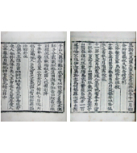신라 이찬(伊飡) 이사부(異斯夫)가 우산국을 정벌하여 신라가 우산국을 복속합니다. 이로써 울릉도와 독도는 우리 역사와 함께 하기 시작합니다. 『동국문헌비고』 (1770년)에는 "울릉(울릉도)과 우산(독도)은 모두 우산국의 땅"이라고 기술했습니다.
-
1454
『세종실록』「지리지」세종실록 지리지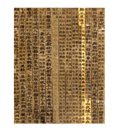조선 초기 관찬서인 『세종실록』「지리지」(1454년)는 울릉도와 독도가 강원도 울진현에 속한 두 섬이라고 기록하고 있습니다. 특히 "우산(독도) 무릉(울릉도)… 두 섬은 서로 멀리 떨어져 있지 않아 날씨가 맑으면 바라볼 수 있다."라고 기록하고 있는데, 울릉도에서 날씨가 맑은 날 육안으로 보이는 섬은 독도가 유일합니다.
-
1625
다케시마(竹島, 울릉도)
도해(渡海) 면허울릉도 전경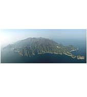
자료제공 : 울릉군청일본 막부가 돗토리번(지금의 돗토리현)에 살고 있는 오야·무라카와(大谷·村川) 양가에 다케시마(竹島, 울릉도) 도해(渡海)를 면허한 것입니다. 면허를 내린 시기는 1618년, 또는 1625년이라고도 합니다.
-
1693
안용복(安龍福) 일본 납치숙종실록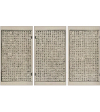안용복(安龍福), 박어둔(朴於屯) 두 사람이 울릉도에서 어업을 하다가 울릉도에 온 일본 오야·무라카와(大谷·村川) 양가의 선원들에게 잡혀서 일본으로 끌려간 사건입니다. 이 사건으로 인해 조선과 일본 간의 울릉도 영유권에 대한 분쟁(울릉도 쟁계)이 발생합니다.
-
1694
울릉도 수토제도 시행결정울릉도 전경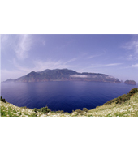
자료제공 : 울릉군청안용복 사건으로 인해 일본과 울릉도 영유권에 대한 분쟁(울릉도 쟁계)이 발생하자, 조선 정부는 삼척첨사 장한상(張漢相)을 울릉도에 파견하여 울릉도의 현황을 조사합니다. 그 이후 영의정 남구만의 건의에 따라 2년 걸러 한 번씩 관원을 울릉도에 파견하여 수토*를 하기로 결정합니다.
* 수토 : 무엇을 알아내거나 찾기 위해서 조사하거나 살핌 -
1695
일본 돗토리번 답변돗토리번 답변서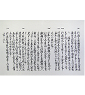
(복제본)일본 막부는 울릉도 영유권에 대해 알아보기 위해 돗토리번에 울릉도의 소속을 질문(12월 24일)했습니다. 이에 대해 돗토리번이 막부에 다케시마(울릉도)와 마쓰시마(독도)가 돗토리번의 소속이 아니라고 답변(12월 25일)함에 따라 막부는 울릉도와 독도가 일본령이 아님을 공식적으로 확인합니다.
-
1696
1월. 다케시마(울릉도)
도해금지령다케시마(울릉도)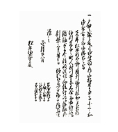
도해금지령(복제본)
자료제공 : 독도박물관일본 막부는 돗토리번을 통해 울릉도와 독도가 일본령이 아님을 확인하고 다케시마(울릉도) 도해금지령을 내렸습니다. (1696년 1월 28일) 이후 조선과의 외교문서를 통해 울릉도가 조선령임을 공식 확인하였습니다. (1699년)
-
1696
5월. 안용복(安龍福) 일본 도해원록구병자년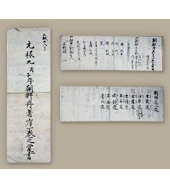
조선주착
안일권지각서안용복(安龍福)이 울릉도에 어업 온 일본 어선을 추격하여 독도(자산도)에서 쫓아버리고, 일본에까지 다녀온 사건입니다. 이때 안용복이 오키섬 관리에게 울릉도와 독도가 조선령이라고 진술한 기록이 「원록9병자년조선주착안일권지각서」에 실려 있습니다.
-
1770
『동국문헌비고』「여지고」동국문헌비고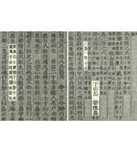국왕 영조의 명에 의해 조선의 문물제도를 기록한 관찬서입니다. 이 책에는 "우산도(독도)와 울릉도… 두 섬으로 하나가 바로 우산이다... 「여지지」에 이르기를, 울릉과 우산은 모두 우산국의 땅인데, 우산은 일본이 말하는 송도(松島)다."라고 하였습니다.
-
1870
일 외무성
『조선국교제시말내탐서』조선국교제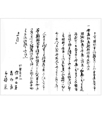
시말내탐서(복제본)
자료제공 : 독도박물관1870년 외무성 관리인 사다 하쿠보(佐田白茅) 등이 조선을 시찰한 후 외무성에 제출한 보고서입니다. 이 보고서에는 "다케시마(울릉도)와 마쓰시마(독도)가 조선 부속이 된 사정"이 언급되어 있어, 당시 일본 외무성이 두 섬을 조선 영토로 인식했다는 것을 알 수 있습니다.
-
1877
「태정관(太政官)지령」태정관지령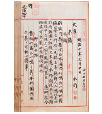1877년 3월 일본 최고 행정기구인 태정관이 내무성에 울릉도와 독도가 일본령이 아니라고 내린 지령입니다. 태정관은 17세기 에도 막부와 조선 정부 간 교섭(울릉도쟁계) 결과 울릉도와 독도가 일본 소속이 아님이 확인되었다고 판단하고, "다케시마(울릉도) 외 일도(一嶋, 독도)의 건에 대해 본방(本邦, 일본)과는 관계가 없음을 명심할 것"이라는 지시를 내무성에 내렸던 것입니다.
-
1900
칙령(勅令) 제41호 반포칙령 제41호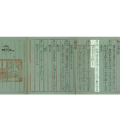고종 황제는 칙령으로 '울릉도(欝陵島)를 울도(欝島)로 개칭(改稱)하고 도감(島監)을 군수(郡守)로 개정(改正)한 건(件)'을 제정 반포했습니다. 이 칙령 제2조에 울도군(欝島郡)의 관할 구역으로 울릉전도(欝陵全島), 죽도(竹島)와 함께 석도(石島, 독도)를 규정하여 독도가 울도군의 관할임을 명확히 했습니다.
-
1905
시마네현고시
(島根縣告示) 제40호시마네현고시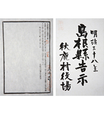
제40호(복제본)
자료제공 : 독도박물관일본의 독도 영토 편입을 알리는 지방 고시입니다. 일본은 1904년 이래 만주와 한반도에 대한 이권을 두고 러시아와 전쟁 과정에서 동해에서의 해전을 위한 군사적 필요성에 의해 1905년 독도를 무주지라 주장하면서 영토편입을 시도하고 시마네현에 고시했습니다. 그러나 시마네현고시 제40호는 일본의 우리나라 국권에 대한 단계적 침탈 과정의 일환이었으며, 우리나라가 오랜 기간에 걸쳐 확고히 확립하여 온 독도 영유권을 침해한 불법행위이므로 국제법적 효력을 가질 수 없습니다.
-
1906
3월. 울도군수 심흥택 보고서보고서 호외 및 지령 제3호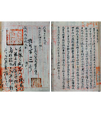울도군수 심흥택이 울릉도를 방문한 일본 시마네현 관민 조사단으로부터 일본이 독도를 영토 편입했다는 소식을 듣고, 다음 날 강원도 관찰사와 내부(內部, 현재의 안전행정부에 해당)에 보고한 문서입니다. 이 보고서에는 "본군 소속 독도"라고 하여 독도가 울도군의 관할임을 분명히 했습니다.
5월. 의정부 참정대신 지령 제3호 대한제국 최고의 행정기구인 의정부에서 일본의 독도 영토 편입을 부인하는 지령을 내린 것입니다. 의정부는 강원도 관찰사로부터 일본이 독도를 영토 편입했다는 보고를 접하고, 일본의 독도 편입을 부인하는 참정대신(지금의 부총리격)의 지령을 내립니다. -
1946
1월 29일. 연합국최고사령관
각서(SCAPIN) 제677호SCAPIN 제677호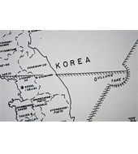
관련 지도(복제본)
자료제공 : 독도박물관제2차 세계대전 종전 후 일본의 통치 행정 범위에서 독도를 제외한 각서입니다. 연합국 최고사령관은 일본의 영역에서 "울릉도, 리앙쿠르암(독도)과 제주도는 제외된다."라고 규정하였습니다. 6월 22일. 연합국최고사령관 각서(SCAPIN) 제1033호 연합국 최고사령관이 SCAPIN 제677호에 이어 일본의 선박 및 국민이 독도 또는 독도 주변 12해리 이내에 접근하는 것을 금지한 각서입니다.
-
1951
샌프란시스코 강화조약 체결샌프란시스코
강화조약 체결
자료제공 : 미국국립문서기록관리청샌프란시스코 강화조약은 제2차 세계대전을 종결하면서 연합국과 일본이 체결한 조약입니다. 이 조약 제2조(a)에서 "일본은 한국의 독립을 인정하고, 제주도, 거문도 및 울릉도를 포함한 한국에 대한 모든 권리, 권원 및 청구권을 포기한다."라고 규정했습니다. 이는 한국의 3천여 개의 도서 가운데 예시에 불과하며, 독도가 직접적으로 명시되지 않았다고 하여 독도가 한국의 영토에 포함되지 않는다고 볼 수 없습니다.
독도 연대기
독도 행사
독도 친구들
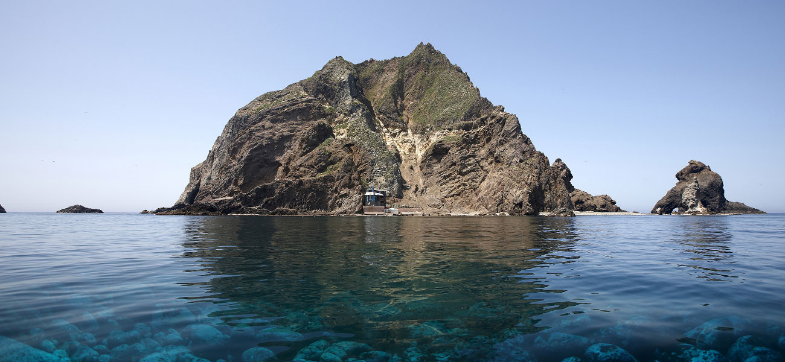
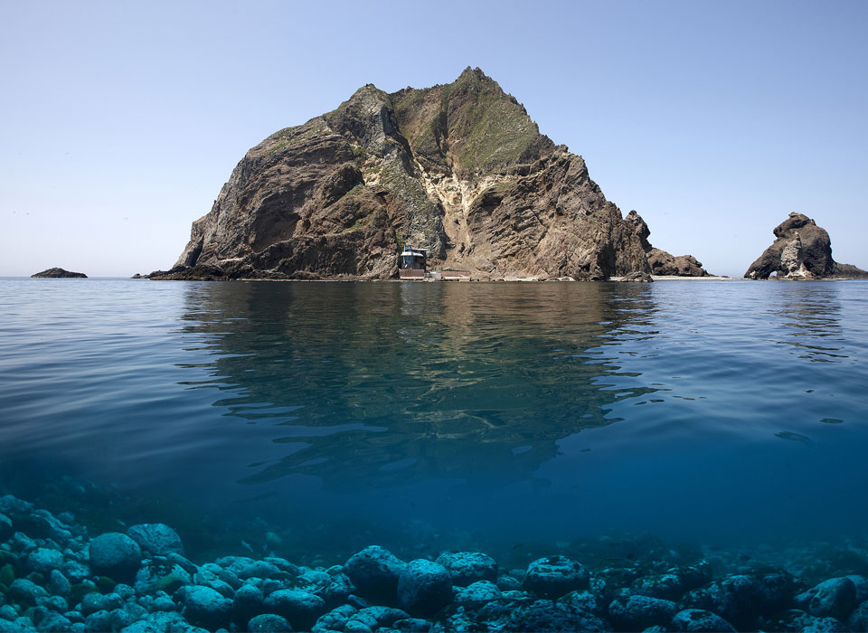
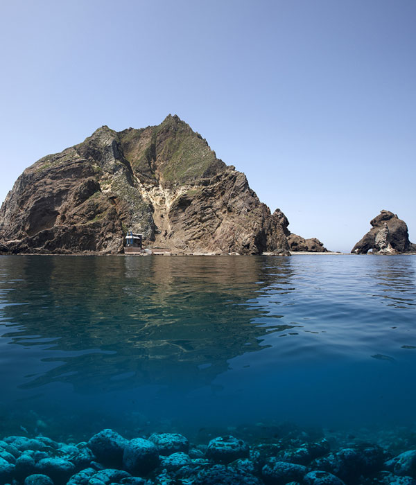


독도 가는길
-

- 울릉도
-
동도
서도
독도
클릭